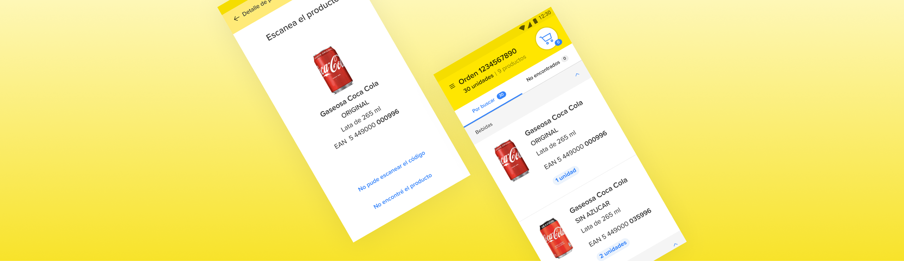
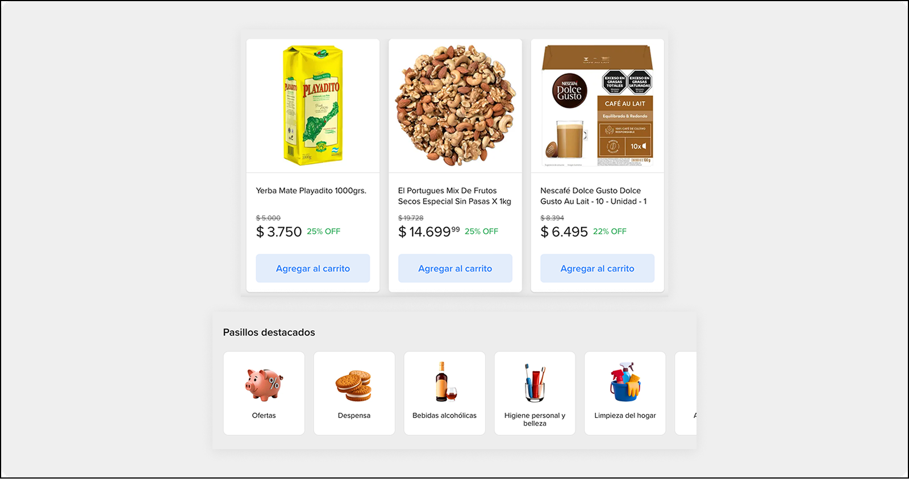
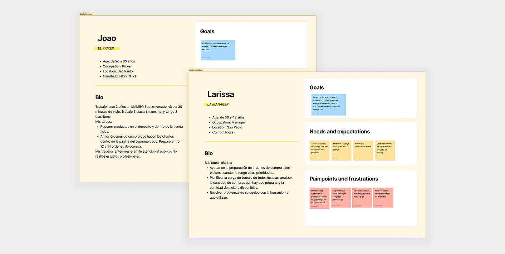
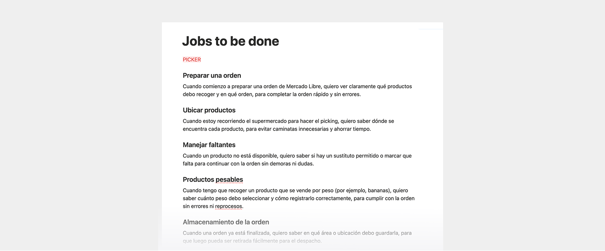
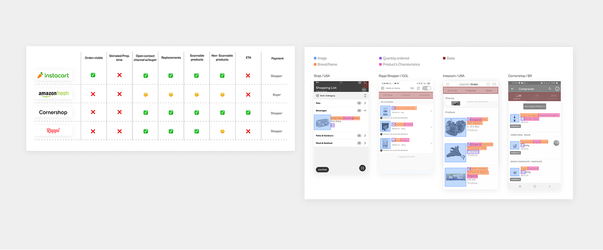
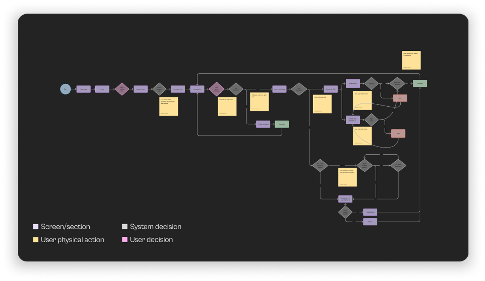
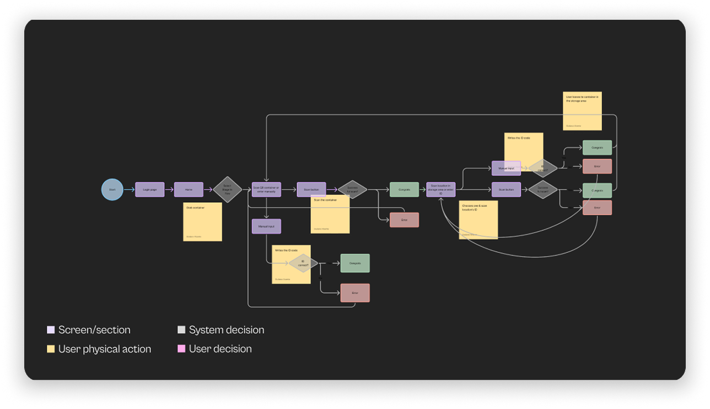

Pronto App
Empowering supermarket partners to scale their CPG business within Mercado Libre through seamless order management and high-precision operations.

Context
Mercado Libre aims to expand its CPG (Consumer Packaged Goods) business unit. To achieve this, it is partnering with existing supermarket chains to integrate their entire product catalogs into the marketplace.
Problem
Supermarkets lack an efficient tool to manage Mercado Libre orders. This results in slow picking, high error rates, and inconsistent order quality, which could negatively impact the customer experience.

UX Goal
Ensure that CPG purchase orders are prepared accurately and on time to safeguard the customer experience.
OKR
Dominate the CPG market by transforming our Marketplace into the preferred one-stop-shop platform.
KR 1 (Efficiency): Maintain the average picking time below 40 minutes.
KR 2 (Quality): Reduce the rate of "wrong item" incidents from 12% to 0%.
KR 3 (Growth): Successfully onboard the supermarket partner's top 3 stores in São Paulo.
Potential Solution
Design a tool that supports supermarket employees during the order fulfillment process.
Know the user
The Operations team held meetings with the operations managers of each partner to understand the pickers' tasks, the most common problems, and the scenarios they face when processing purchase orders. I analyzed all the meeting notes and created two proto-personas.

Define JTBD
I defined the Jobs To Be Done that we needed to consider before starting to build the user flow.

Competitive Benchmark
I analyzed four competitors from the US, Colombia, and Brazil using sources such as apps, YouTube, and blogs.
I reviewed their main features, key screens, and user flows to understand common patterns in navigation and content hierarchy. This helped me build a reference to guide the product design.

STEP #2
Userflows
I defined the user flow for the two main MVP tasks. I then validated it with stakeholders and moved forward with the app's design and experience.


Design phase
I designed the product from the initial stage to high-fidelity prototypes, presenting and explaining each phase of the process to the project stakeholders.
STEP #4
Usability Test
I conducted the application tests together with the researcher assigned to the project, covering both main flows.
As a team, we defined the objective and methodology that the user tests would have.
I co-built, together with the researcher, the script we would use to ensure it was aligned with our objective.
I monitored the tests remotely since they were conducted in São Paulo. I documented everything that happened, including the pain points.
I prioritized the pain points that represented an issue in daily operations and adjusted the proposal to clarify the experience.
Key results
Q1 2022 — 3 months after launching
4 stores
Stores operating, 3 in São Paulo and 1 in CDMX
Mercado Libre generated a net revenue of USD 604K within the first 3 months.
25 minutes
We achieved an acceptable average picking time per order.
3% picking errors
Due to scanning incorrect products.